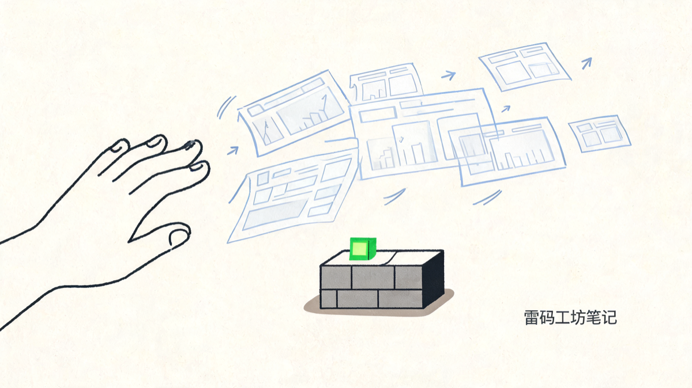
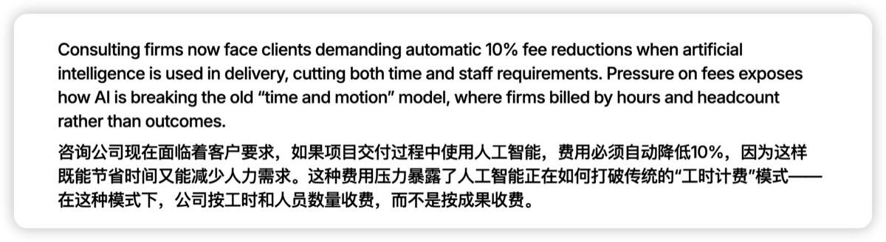
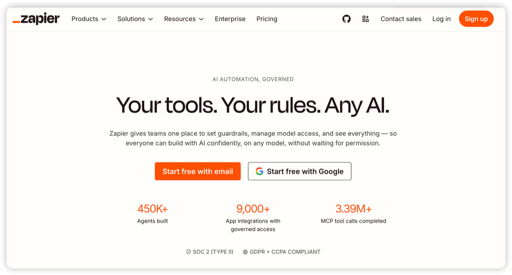
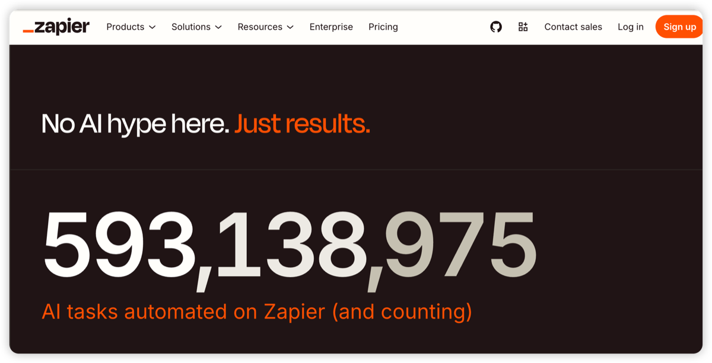
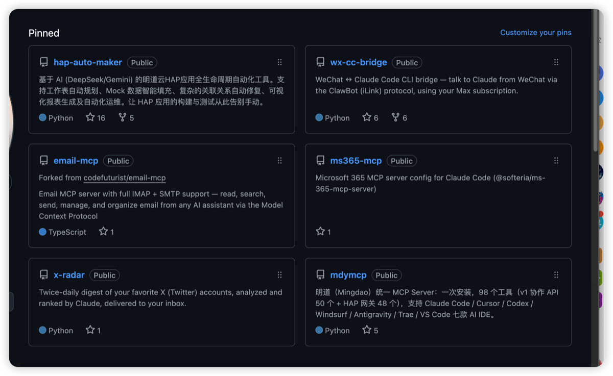

我在 LinkedIn 上划走了五十张 AI 信息图，然后想明白营销人最后的护城河是什么
那是一个普通的工作日早上，我端着咖啡刷 LinkedIn。
手指划得飞快。一张配图、又一张配图，全是那种排版精致、色块整齐、左边一个痛点右边一个解决方案、中间一个箭头的「思想领导力」信息图。我一张都没停下来看。划到第十几张，我突然停手了。不是因为某张终于打动了我，恰恰相反，是因为我意识到一件让我有点不舒服的事：
我，一个每天在用 AI 生成图、生成文案、生成代码的人，反而是这些 AI 内容最不想看的人。
我截了两张图，因为它们太典型了。

一条 LinkedIn 帖子：用「合久必分」起头，画了一张七步走的 AI 知识中台架构图，密得像教科书，却没人会真的去读
第一张，开头引了句「合久必分，分久必合」，接着画了一张七步走的 AI 知识中台架构图：从各子公司系统、数据导出、清洗入库，一路连到 MongoDB、向量检索、智能体层，密密麻麻，结构完整得像教科书。立意很大，信息很满。但你盯着看十秒就会发现，作为一个刷信息流的人，你根本不会去读它。它只是把一套谁都说得出口的正确话术，用 AI 画成了一张图。

另一条 LinkedIn 帖子，画风完全相反：一整张手绘的「AI 战略爬山记」，从聊天机器人小摊一路爬到山顶的「治理引擎」，细节多到让人佩服，却照样让人不想读完
第二张走的是另一个极端。一张精雕细琢的手绘长图，标题叫《你的 AI 战略想要一个大脑，你的词汇却点了一个聊天机器人》，画了个小人从「聊天机器人菜单」的小摊出发，一路爬山，爬到山顶的「运营治理引擎」。配色、笔触、隐喻一应俱全，细节多到惊人，你不得不承认它「做得很用心」。可问题恰恰在这——它太满、太用力，作为一个三秒划一屏的人，我连标题都没读完就划过去了。一张是密得像教科书的架构图，一张是繁复得像绘本的爬山记，两个极端，同一个结局：没人停下来。
发这两张图的人，我相信都是认真的营销同行。他们没做错什么，只是用了这个时代效率最高的工具。问题不在他们，问题在于：当所有人都能在三十秒里生成一张「专业」的图，「专业」这件事本身，就不值钱了。
为什么造洪水的人，自己最讨厌洪水
我先说一个反直觉的观察。
最厌恶 AI 内容的人，往往不是那些不懂 AI 的人，而是天天用 AI 的人。
道理很简单。一个不用 AI 的人，看到一张漂亮的信息图，第一反应可能还是「哇做得不错」。但一个每天用 AI 的人，看到同一张图，脑子里跳出来的是另一句话：「这个我也能在三十秒里生成一张，甚至更好。」
他太清楚这背后有多少是真的劳动，有多少只是按了一下回车。他清楚一张图、一段视频、一篇「行业洞察」的边际成本，已经约等于零。所以他对内容的挑剔程度，是普通消费者的好几倍。
这就带来一个以前从来没出现过的局面：内容的生产者和最苛刻的消费者，第一次重合在同一群人身上。而这群人——产品经理、技术负责人、做决策的甲方——恰恰是 B2B 营销最想打动的那群人。
你用 AI 批量生产内容去打动他们。而他们，正是最看得穿 AI 内容的人。
这不是某个平台的毛病，是整个内容供给侧的事。我刷抖音、刷小红书、刷 TikTok、刷 X，是同一种体验：内容越来越多，能让我停下来的越来越少。平台自己也卡在中间，它既不能拒绝这波 AI 浪潮（用户和流量会跑去别家），又不能放得太开（消费者会因为劣质内容流失）。于是有了主动标识、系统打标、限流这些治理动作。但说实话，这些都是在洪水里捞东西，治标。也有平台干脆全做 AI 内容，比如即梦，里面全是 AI 生成的图和视频，可它的活跃度并不好。一个所有人都知道是 AI 生成的池子，反而没人愿意泡在里面。
所以真正该问的不是「怎么管 AI 内容」。它更扎心：当内容多到不值钱，什么东西反而变值钱了？
这个问题，对做 B2B 营销的人来说，是生死攸关的。
先看清楚：谁正在贬值
要回答什么在升值，得先承认什么在贬值。
我做了十几年 SaaS 营销，我们这行最经典的内容资产是什么？白皮书、电子书、解决方案手册、第三方机构的报告和奖项。这套东西支撑了 B2B 营销整整二十年。一份做工精良的白皮书，曾经是「我们很专业、很可信」的证明。
现在你写一份白皮书出来，看的人有多少？我自己心里有数。打开率、读完率，不用我多说，做过的同行都懂那个数字。
更要命的是连机构本身的话语权都在消失。Gartner、Forrester 这些曾经一句话能影响百万美元采购决策的分析机构，现在出的报告，认真读的人越来越少。这一点，市场已经在用脚投票。

一段被广泛转引的报道：客户开始要求，只要交付过程用了 AI、省了时间和人力，咨询费就自动打九折——AI 正在打破咨询业按「工时 + 人头」收费的老模式
你看这条。据澳大利亚《金融评论报》的报道，客户已经开始要求：只要咨询公司用 AI 更快地、用更少的人完成交付，费用就得自动降 10%。这暴露了一件事——AI 正在打破咨询业沿用多年的「工时加人头」收费模式：过去按小时、按人数开账单，现在客户只认结果。
这句话信息量很大。它意味着市场已经默认了一件事：咨询机构那套「精良内容」的生产成本，正在被 AI 打下来，而且客户心里清楚。机构的裁员、被砍报价，不是什么坏运气，是护城河被填平之后的必然结果。
我想说清楚一点。问题不出在 Gartner，也不出在白皮书的质量。出在「制作精良」这四个字本身：它不再稀缺了。AI 让任何人都能产出看起来很精良的东西。当精良变成廉价，建立在「我比你更精良」之上的所有内容资产，都会一起贬值。
这是坏消息。但坏消息的背面，往往藏着好消息。
再看清楚：什么正在升值
如果稀缺性从「制作精良」上跑掉了，它跑到哪去了？
它跑到了 AI 造不出来的东西上。
逻辑很干净：任何 AI 能轻易生成的东西，都会因为供给爆炸而贬值；任何 AI 造不出来、一造出来就会被戳穿的东西，会因为稀缺而升值。顺着这条逻辑，我把今天还能打动人的内容，排成了一条由浅到深的证据链。
第一层，用户真实的原话。一个真实客户，用他自己的话说你的产品哪里好、哪里救了他的命。这种话 AI 写不出来。准确说，AI 写得出来，但一旦被发现是编的，你的信任就归零了。所以真实的用户证言，在今天变得异常稀缺、异常值钱。
第二层，真实的使用数据。注册量、使用量、消耗量，这些数字是产品真实跑出来的，伪造的代价极高。

Zapier 首页直接把数字摆出来：45 万个 AI agent、9000+ 应用集成、339 万次 MCP 工具调用

「这里没有 AI 噱头，只有结果。」Zapier 用一个滚动的 593,138,987 告诉你平台上自动化跑了多少任务
看 Zapier 怎么做的。它的首页不跟你讲故事，直接把数字砸在你脸上：45 万个 AI agent、339 万次工具调用。再往下，一句「No AI hype here. Just results.（这里没有 AI 噱头，只有结果。）」，配一个还在滚动的计数器：5.9 亿次自动化任务。在一个全是 AI 噱头的市场里，Zapier 选择用真实的、巨大的、还在增长的数字来证明自己。这比任何一份白皮书都有说服力。
第三层，可复现的实操经历。你做过一件事，写下来或录下来，别人照着做就一定能做成，是真的能跑通的过程，不是 AI 臆想出来的步骤。这种内容 AI 模仿不了，因为它没有「真的做过」这个前提。它能编出看起来对的步骤，编不出真的能跑通的步骤。
第四层，也是最顶端的：你真的把它做出来了。一个能用的网页、一个开源的项目、一个跑得起来的产品。这是证据链的尽头，因为它不需要任何修辞。东西就在那，能点开，能用，能 fork。它本身就是最硬的证明。
我自己就是那个例子
说到这，我得现身说法，虽然有点不好意思。

我自己的 GitHub（andyleimc-source），从今年年初开始 Vibe Coding，公开的项目已经几十个
今年年初，我开始认真用 AI 写代码（现在大家叫 Vibe Coding）。我是个做营销的，不是工程师。但这半年下来，我做了几十个项目，有的自己用，有的公开放在 GitHub 上。明道云 HAP 应用的自动化构建工具、把 Claude Code 接进微信的桥、邮件 MCP、X 内容雷达……62 个仓库，就摆在那。
我贴这张图，真不是为了炫耀，我那点 star 数也没什么好炫耀的。我想说明的是另一件事：
一个做营销的人，今天最硬的名片，是他 push 过多少行真能跑的代码，是他真做出来的东西。文章写过多少篇，已经没那么有人在意了。
如果我跟你说「我懂 AI、我懂产品」，这是一句任何人都能说、AI 也能帮你润色得很漂亮的话。但如果我把 62 个仓库摆在你面前，你点开任何一个都能跑，这件事 AI 替我说不了，别人也抢不走。它廉价吗？一点都不廉价，是我半年里一个晚上一个晚上熬出来的。正因为不廉价，它才有信任的重量。
内容已经廉价到不值钱了。但「你真的做过、真的做出来了」这件事，反而成了那个旧时代精品内容的替代品。
给还在写白皮书的营销同行：四件该换的事
我不想停在感慨上。如果你也是做 B2B 营销的，下面是我认为现在就该动手换的四件事。
第一，把客户的原话当一级资产来采集。 别再让客户案例躺在 PDF 里写成「某领先企业」。去要那句真实的、带情绪的、具体的话：他遇到了什么麻烦，你的产品具体怎么帮他解决的。这种素材以前是锦上添花，现在是少数还可信的东西。建一个机制专门收集它。
第二，把产品的真实数字做成内容。 你的注册量、活跃量、调用量、为客户省下的时间，只要数字过得去，就大大方方亮出来。学 Zapier，把数字放在最显眼的位置。在一个全是噱头的市场里，敢亮真数字本身就是一种稀缺的可信。
第三，把你真的做过的事公开成可复现的过程。 别写「AI 如何赋能行业」这种谁都能 AI 生成的空文。写「我用 X 工具，花了三个小时，把 Y 这件事做成了，步骤如下」。能让别人照着做成的内容，今天的含金量是空泛洞察的十倍。
第四，如果你能做出作品，就别只停在写文章。 一个小工具、一个网页、一个开源项目，胜过十篇思想领导力长文。营销人会用 AI 做点真东西出来，这件事本身就是最好的营销。
这四件事有一个共同点：都更难、更慢、更需要你真的去做。但这恰恰是它们的价值所在，因为 AI 帮不了你走这条路，走通了的人才稀缺。
时间不等人。AI 的进化是按周算的，海外那批 AI Native 的公司从第一天就是这么干的。留给我们这套老打法的窗口，关得比你想的快。
写在最后
那天早上我划走的五十张 AI 信息图，没有一张是错的。它们排版都对、立意都对、道理都对。它们唯一的问题是太容易了，所以什么都证明不了。
我们这一代营销人，是在「内容为王」的信条里长大的。我们相信只要内容做得够好，就能赢。但 AI 把「做得够好」这件事变成了人人都会的基本功。当所有人都能做出够好的内容，内容就不再是王了。
王位空出来了。坐上去的，会是那些能拿出真东西的人：真实的用户、真实的数字、真实的过程、真实的作品。
内容很廉价。但你真的做过的事，很贵。
在一个谁都能生成一切的时代，唯一还能证明你的，是那些你真的做出来的东西。
关于作者
老雷（Andy），明道云 & Nocoly CMO，SaaS 行业从业十余年。骨子里是个技术迷，乔布斯的信徒，相信好的产品能改变世界。深度关注 AI、商业与科技趋势，目前在深度使用和实践 Claude Code，专注探索 AI 如何重塑产品形态和商业逻辑。不聊概念，只聊真实发生的事。